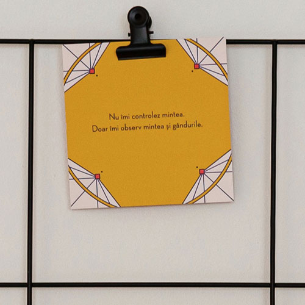

E nevoie de mult curaj să te destăinui unui străin despre cele mai profunde gânduri ale tale. Dar primul pas, cel mai greu, este de fapt o promisiune pe care ți-o faci ție însuți: că meriți să fii bine.
Multe întrebări îți pot trece prin minte înainte de a începe acest drum. Am pregătit acest ghid tocmai pentru a-ți oferi claritatea de care ai nevoie ca să poți păși cu încredere și liniște în spațiul meu de terapie.
E perfect normal să ai emoții
„Sunt problemele mele destul de serioase?”, „Dacă mă va judeca?”, „Dacă nici măcar eu nu pot pune în cuvinte ce simt?”. Aceste gânduri sunt parte din proces.
Nu ești singur/ă în această stare de incertitudine. Mi-am ales această profesie tocmai pentru a oferi sprijin real, fără prejudecăți. În cadrul ședințelor mele, poți fi 100% tu, cu toată vulnerabilitatea sau confuzia ta. Nu este despre cât de bine poți explica problema, ci despre a începe să o explorăm împreună.

Ce se întâmplă, concret, în prima sesiune?
Imaginează-ți prima întâlnire ca pe o discuție caldă, nu ca pe un interogatoriu. Te voi întreba ce te preocupă și ce te-a făcut să apelezi la terapie chiar acum. Rămâne la latitudinea ta cât de mult dorești să povestești din prima clipă. Important este să te simți în siguranță.
Dacă nu știi încă răspunsul la toate întrebările, e în regulă. De aceea alegi să vii la terapie – pentru a găsi claritate în haosul de gânduri. Uneori, subiectul devine clar imediat, alteori îl descoperim pas cu pas, ca piesele unui puzzle.
Notează-ți:
Vom stabili împreună cât de des e bine să ne întâlnim (online sau fizic) pentru a atinge liniștea și obiectivele pe care ți le dorești.
Cum să te pregătești (mici sfaturi practice)
Terapia nu este doar o oră în calendar, ci un proces care continuă și după ce s-a terminat sesiunea. Iată câteva lucruri care te pot ajuta:
- 🪑 Locul tău liniștit: Alege un spațiu unde nu vei fi întrerupt/ă, cu o conexiune stabilă la internet dacă ne vedem online.
- 📝 Gândurile tale: Ia-ți 15-30 de minute înainte pentru a-ți nota motivele principale pentru care vrei să începi. Ce te doare cel mai tare acum?
- 🌿 Răbdare cu tine: Setează-ți așteptări realiste. Uneori simți ușurare imediat, alteori drumul e mai lung și are nevoie de timp.
- 🧘 Timpul de după: Alocă-ți măcar 15 minute după sesiune doar pentru tine. Vor apărea conștientizări care au nevoie de spațiu să se așeze.
Durata și logistica
O ședință individuală durează 50 de minute. Acest timp este dedicat exclusiv ție, asigurându-ne că putem aprofunda subiectele fără graba următoarei programări.
Pentru terapia de cuplu, timpul este de 90 de minute, pentru a oferi ambilor parteneri spațiul necesar de a se exprima pe deplin.
Ești gata să facem acest pas împreună?
Programează prima ședință